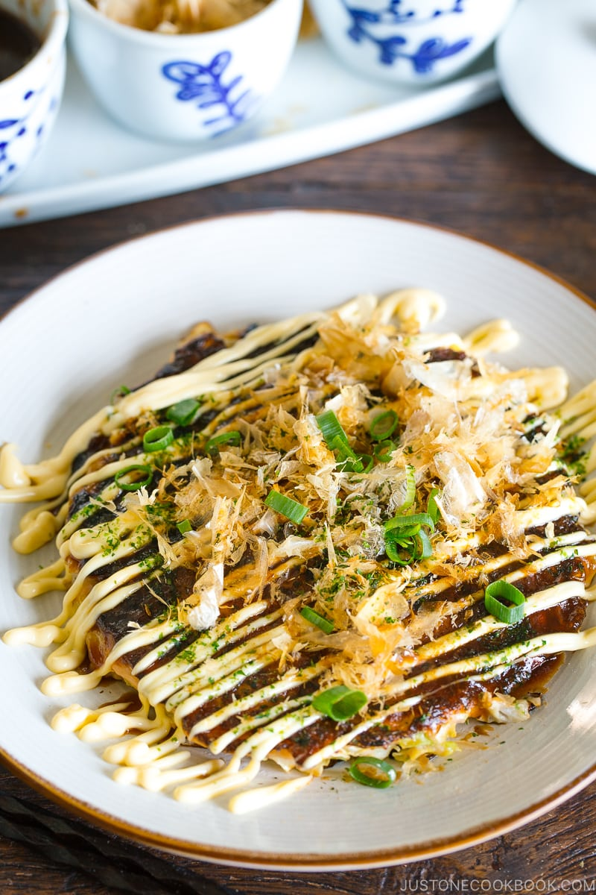

How To Make an Okonomiyaki

The above image shows an example of an okonomiyaki.
Follows these steps to make a delicious okonomiyaki: a japanese vegetable pancake!
Step One: Prepare the Batter
- Measure out approximately one cup of water
- Mix the water, eggs, and okonomiyaki mix together in a bowl
- Take one head of cabbage and cut it into small strips
- Add the cabbage into the batter, and mix until well combined
- Add small chunks of spam, meat, or noodles (optional) into the batter as needed
Step Two: Stove Action
- Heat a pan and add oil/spray
- Place 1/2 cup of batter onto the pan
- Wait until one side is cripsy and golden, the flip it
- When both sides are crispy and brown, remove the okonomiyaki from the pan
Step Three: Putting It All Together
- Add nori, tonkatsu sauce, siracha, and mayo as desired
- Eat while it's hot!
Step Four: Enjoy!
Ingredients:
- Cabbage - 1 Head
- Spam - 1 Block
- Eggs - 2
- Okonomiyaki Mix - 1/2 Bag
- Nori (seaweed) Flakes - 1 Packet
- Tonkatsu Sauce - 1/4 Cup
- Mayo
- Siracha
Return to Home Page